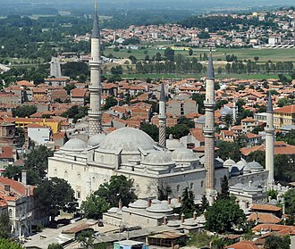

Presentación
La mosquée Üç Şerefeli est une mosquée d'Edirne, en Turquie, érigée entre 1438 et 1447.
جامع الشُرُفَات الثلاث أو المسجد ذو الثلاث شُرُفات، أو مسجد الشرفات الثلاث هو مسجد عثماني شُيّد في القرن الخامس عشر بمدينة إدرنة بتركيا، بناه السلطان العثماني مراد الثاني عام 1447م، وهو أحد أكبر المساجد وأكثرها أهمية في زمن الدولة العثمانية المبكر وقد تميّز ببنائه على طراز لم يُشاهد كثيرًا في الجوامع السابقة، وكانت قبته الأكبر بين المباني العثمانية وقت بناءه.
The Üç Şerefeli Mosque is a 15th-century Ottoman mosque in Edirne, Turkey.
Üç Şerefeli Cami, Edirne'deki Osmanlı döneminden kalma camidir. Kimin tarafından hangi tarihte yaptırıldığı tartışmalıdır. Bazı iddialara göre Yıldırım Bayezid'ın oğullarından Musa Çelebi tarafından 1410 yılında yaptırılmıştır. Diğer bir iddiaya göre ise bânîsi II. Murat olup 1437'de yaptırılmıştır. Bazı kaynaklar yapım tarihi olarak 1447 yılını da vermektedir. Mimarı ise Mimar Sinan'ın ustası Hacı Muslihiddin Ağa'dır.
Masjid Sherefeli, secara resmi bernama Masjid Üç Şerefeli adalah sebuah masjid peninggalan Kesultanan Utsmaniyah pada abad ke-15 yang berada di kota Edirne, Provinsi Edirne, Turki. Masjid ini awalnya dibangun antara tahun 1438 hingga 1447 atas perintah Sultan Murad II. Kemudian masjid ini terletak di pusat bersejarah kota, dekat dengan Masjid Selim dan Masjid Eski. Namanya mengacu pada minaret yang tidak biasa dengan tiga balkon.
اچ شریفلی مسجد ترکی کے شہر ادرنہ میں واقع ایک قدیم مسجد ہے جو عثمانی دور میں تعمیر کی گئی۔ مستطیل شکل کی یہ مسجد عثمانی سلطان مراد ثانی نے 1438ء سے 1448ء کے درمیان تعمیر کرائی۔ یہ مسجد شہر کے تاریخی مرکز میں واقع ہے، جہاں دیگر اہم و تاریخی مساجد سلیمیہ مسجد اور قدیم مسجد بھی موجود ہیں۔
Die Üç-Şerefeli-Moschee ist ein Moscheebau aus dem 15. Jahrhundert in Edirne, Türkei, und ein Monumentalbau der frühen osmanischen Architektur.
La mezquita Üç Serefeli es una mezquita del periodo de la arquitectura otomana temprana del siglo XV erigida en Edirne, Turquía.
La moschea Üç Şerefeli è una moschea ottomana di Edirne, in Turchia. Il nome, che letteralmente significa moschea dei tre balconi, è dovuto alla particolarità della triplice balconata presente sul minareto più alto. È situata nel centro storico della città, a poche centinaia di metri dalla moschea Selimiye e dalla moschea Vecchia.
A Mesquita Üç Şerefeli é uma mesquita otomana situada na cidade de Edirne, na Turquia. Foi construída no século XV.
Moscheea Üç Șerefeli este o moschee din Edirne, Turcia. Este unul dintre principalele locuri de rugăciune din oraș, alături de moscheile Selimiye și Eski. Numele edificiului se traduce ca Moscheea Cu Trei Balcoane, o referire la minaretul cel mai înalt.
En el mapa
Documentos y enlaces
- Wikipédia — Français
- Wikipédia — العربية
- Wikipédia — English
- Wikipédia — Türkçe
- Wikipédia — Bahasa Indonesia
- Wikipédia — اردو
- Wikipédia — Deutsch
- Wikipédia — Español
- Wikipédia — Italiano
- Wikipédia — Português
- Wikipédia — 中文
- Wikipédia — Română
- Wikidata — Q3308631
Datos: Wikidata (CC0), actualizados cada 3 meses. El año es la fecha de construcción conocida más antigua del edificio: para un edificio convertido después en mezquita (como Santa Sofía), es la del edificio original. Fotos: Wikimedia Commons, autor y licencia en la página de cada foto.